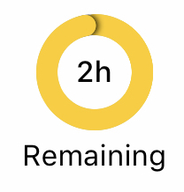
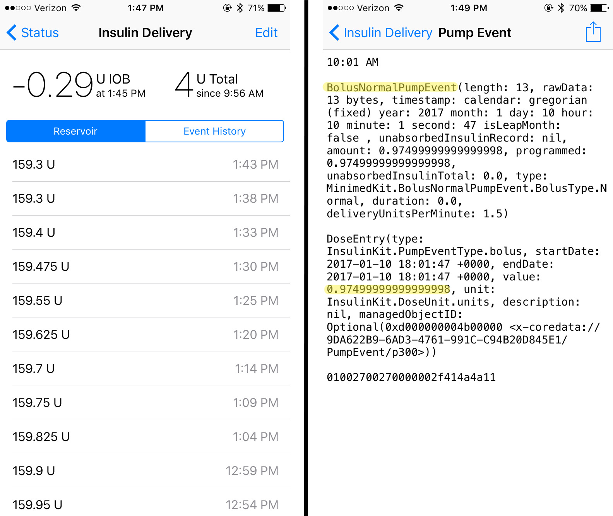

Loop Displays⌁
This section of the docs will go over the Loop displays available and what information they offer. Information about your Loop's actions (or inactions) can often be found simply by looking at the visuals presented in the app.
Status Screen⌁
The Status Screen is the main root navigation screen in Loop. It is broken up into 3 main display areas; Heads Up display (HUD), Charts, and Toolbar. The HUD is the top area of the screen. This shows status of the last time loop ran, current BG Reading, current temp basal, and current pump information. The next area is the charting area. This includes, glucose trend and prediction, Active Insulin, Insulin Delivery, and Carbohydrates. The final display area is the toolbar which has buttons for Carbs, Pre-Meal, Bolus, Workout Mode, and Settings.

Heads Up Display⌁
The Heads Up Display (HUD) is a very useful quick reference guide to your Loop's status. Every 5 minutes, Loop updates CGM and pump/pod data. Loop timestamps the HUD data with when the last data point came in. If a timestamp goes older than 5 minutes old, that is a valuable indicator to where your Loop is failing to get needed information. The HUD's first three icons, from left to right, are the same no matter whether you are using a Medtronic pump or Omnipod; status of the last time loop ran, current BG Reading, and current temp basal. The last two icons will change depending on what type of pump you are using.
Medtronic users: The last two icons are the most recent (1) pump/reservoir status and (2) pump percentage battery remaining.

Omnipod users: The last two icons are the most recent (1) pod/reservoir status and (2) hours of pod use.

Loop Status⌁
The Loop Status is the colored circle in the upper left corner of the main Loop display. There are four colors that are typically displayed.
 |
A grey circle indicates the Loop is warming up and hasn’t yet completed its initial loop. When the Loop is first activated, it may take about 15-20 minutes to complete the first Loop, and the grey circle will be displayed. It needs CGM data to be gathered, so be patient. When it finally completes its first loop, the circle will turn green. If you can't get your grey loop to turn green, please see the Grey Loop troubleshooting page for tips. |
 |
A green circle indicates the Loop has been successfully completed within the last 5 minutes. The time since the loop last completed will be displayed under the circle. |
 |
A yellow circle indicates the Loop has not completed in the last 5-15 minutes. It is not unusual to have a few instances of yellow circles throughout a day of looping. They can be caused by temporarily getting too far away from RileyLink or iPhone (more than about 3-10 feet depending on conditions), CGM failing to read or being in ???, radio frequency “noise” interference, and such. Generally, most yellow circles will self-resolve without needing any special troubleshooting. |
 |
A red circle indicates the Loop has not completed in over 15 minutes. This is not a typical state, and you should troubleshoot why Loop is not completing. Please review the Yellow and Red Loop troubleshooting page for tips on how to get your green Loop back. Clicking on the red circle will also pop-up the last error message to help guide your troubleshooting. |
 |
When the circle is notched and not complete, that means the Loop is operating in “open loop” mode. When the “closed loop” setting is turned on, the loop status will show a completed circle. |
The loop status circle will pulse slightly when RileyLink is giving the pump a new temp basal setting. The pulsing will stop when the temp basal has been set by the pump.
Glucose⌁
 |
The current BG reading from the CGM will display, including trending arrow and time the reading was taken. If the BG is being read straight from the G5 transmitter or G4 receiver, no special symbols will appear. |
 |
If the BG is being read from the Dexcom Share Servers, a small cloud icon will be in the corner of the BG reading. Internet access is required to run in this mode. |
 |
When you first start Loop, there may be a small yellow alert next to the BG. This should go away within a short period of time (around 5 minutes or less). If the yellow alert remains, something may be wrong with fetching BG data. You can try restarting the Loop app (double tap home button, upswipe on app to close) to see if BG data will resume. Special note for Dexcom G5 users, a yellow alert will appear when a calibration is needed. The alert will clear once the calibration is given, but typically Loop will work IF the yellow alert is only for a needed G5 calibration. |
Temp Basal⌁
 |
The temp basal will display the enacted temp basal change relative to the scheduled basal. So if the scheduled basal was 1.0 units per hour and Loop has set a temp basal of 0.2 units per hour, the temp basal icon will display -0.8 U, as shown in graphic to the left. |
Reservoir (Medtronic Users)⌁
 |
The reservoir icon will remain grey and plain until insulin volume decreases. At 25% reservoir volume remaining, the reservoir icon will turn yellow. At 10% reservoir volume remaining, the reservoir icon will turn red. The remaining units will be displayed when it gets to these lower thresholds. |
Battery (Medtronic Users)⌁
 |
For x23, x54 pumps, the battery icon will show 100/75/50/25% increments just as the pump does. As the battery level decreases, the icon will turn from grey to yellow to red. For x22 pumps, the battery icon will read discrete % values. The warning colors/levels on Loop's battery indicator work in conjunction with the type of battery selected. If you change battery types, please make sure to update your battery selection in the Loop app settings. The pump's on-screen battery indicator is not a good indicator of remaining battery life for the purposes of looping. Loop's pump communications will fail from low battery levels sooner than the insulin delivery will fail. The Loop's battery level warnings are designed to give you approximately 8 hours of notice before the pump battery will need changing. |
Reservoir (Omnipod Users)⌁
 |
The pod icon will remain grey and plain until insulin volume decreases. At 50 units or less insulin remaining, the reservoir icon will turn yellow. At 20 units or less remaining, the reservoir icon will turn red. The remaining units will be displayed when it gets to these lower thresholds. |
Pod Age (Omnipod Users)⌁
|  | The pod's age typical 3-day lifespan is represented by three equal segments of the pod age icon. As the pod ages, the segments are converted to a darker grey color. At 54 hours old, the pod age icon will turn yellow. At 72 hours old, the pod age icon will turn red. When you reach 80 hours of pod use, the pod will alarm and the pod age icon will show a "replace pod" message in the HUD. |
Charts⌁
There are several charts that help you navigate your Loop actions. Clicking on each of the charts will also open up additional information.
Glucose Chart⌁

The glucose chart displays BG values in your preferred units. The vertical scale of the chart is calculated on the fly by Loop to be as useful as possible while including the highest and lowest readings in the chart.
The horizontal axis is set to go forward from the current time until your DIA forward (so you can see what Loop eventually thinks BG will be). It then goes back in time as far as it can based upon the width in pixels of your screen. Note, if you turn your device to landscape mode you will have more screen real estate and thus will be able to see further back in time.
The BG correction range is shown as a blue bar on the glucose chart. Single-value target BG range (such as 100-100 mg/dl), will have a narrower blue range. When a temporary override range is enabled, a darker blue bar where the overrides are set will be displayed, as well as the normal correction target in lighter blue.
The eventual BG displayed in the right side of the chart does NOT take into account a recently enacted temp basal. In other words, if you are above BG target and Loop just enacted a high temp basal to help, the eventual BG does not reflect the expected lowering of BGs that would result from that recently enacted temp basal. Loop waits until the insulin has actually been delivery before it "uses" the insulin in its calculations for BG impacts. If you suspended your pump or had a "no delivery" alarm shortly after the temp basal was started, you would want that accurately reflected in the insulin on board and associated eventual BG.
If you tap on the Glucose Chart itself, it will open the Predicted Glucose chart described below.
Predicted Glucose Chart⌁

The predicted glucose view is a great way to gain insight into the various components’ importance in Loop’s prediction of eventual BG. The graph at the top of this view will match your Glucose Chart. Below this chart you will see a very detailed explanation of all of the variables that Loop takes into account in predicting your future BG value. Each of those effects (including Carbohydrates, Insulin, Glucose Momentum and Retrospective Correction) includes details of the calculation use. You can tap on any of the entries to turn them off and on for visualization. The resulting changes can be viewed by the changes in the dashed lines.
Additionally, at the bottom of this screen there is a setting to Enable Retrospective Correction. By enabling it, it will more aggressively increase or decrease basal delivery when BG movement doesn’t match the carbohydrates and insulin-based model. Most Loopers have found this setting to be quite useful and keep the slider on.
Active Insulin Chart⌁

The Active Insulin chart displays the total insulin contribution from both temp basals and boluses. Active IOB can be either positive and negative IOB. Negative IOB results from the suspension of normally scheduled basals. The active insulin displayed in the upper right corner of the chart does NOT include insulin contributions from a recently enacted temp basal or bolus until the pump’s reservoir volume is read and confirms a drop in reservoir volume (confirming the insulin has actually been delivered). So long as you have Event History as the Preferred Data Source in Loop settings, primed insulin deliveries (e.g., cannula fills or manual primes) will not be counted towards IOB.
Insulin Delivery Chart⌁

The Insulin Delivery chart displays a history of the temp basals enacted by Loop. The display is relative to the scheduled basal rates entered in the Loop settings. So, a rate displayed in this chart as +0 units would indicate no temp basal was set, and Loop defaulted to the scheduled basal rate. Individual boluses are indicated by an orange triangle on the chart (shown in the graphic above, near the left-most time). The total insulin delivered since midnight, including all basals and boluses AND priming insulin, is given in the upper right corner of the graph.
Please be patient for a bolus delivery to appear. There is a lag time from when you press the “deliver” bolus button to when the orange triangle is drawn sometimes. The insulin has to be delivered and then the pump reservoir needs to be read to confirm delivery, before the triangle will appear and IOB will be added. Occassionally, the bolus may be temporarily rendered (drawn) as a very high temp basal rate vs. a (triangle) discrete bolus event. This does NOT mean that the Loop actually enacted a high temp basal rate...only that the bolus is being drawn on the chart in the equivalent of a high temp basal rate.
Reservoir and Event History⌁

Clicking on either the Active Insulin or Insulin Delivery charts will open your Insulin Delivery history. The top of the screen will display the current IOB and the total insulin delivered for the day since midnight (or since the time the loop became active if you started Loop after midnight). There are two viewing options; Reservoir or Event History.
-
Reservoir: Omnipod users will not have a reservoir history displayed, simply because pods do not report or track insulin remaining until their reservoirs get below 50 units remaining. Medtronic users will have reservoir history displayed in 5 minute increments, unless Loop has been having communication issues.
-
Event History: Event history is a detailed accounting of all pump/pod actions. Both Medtronic and Omnipod users will have a detailed record of event history.
Carbohydrate Chart⌁

The Carbohydrate chart displays the carbs used by Loop to predict BG changes. The active COB is displayed in the upper right corner of the chart. Clicking on the chart will open the Carb Entries history and you can edit/delete any previous entries through that screen. Please read the Carb Entries page for more information about editing carb entries.

For more information about the Insulin Counteraction Effects information found in the Carb History, please see here.
Tool Bar⌁

The tool bar is where your inputs to the Loop behavior take place. The individual components of the tool bar are, left to right:
-
Carb entry tool- click on this tool to enter carbs into the Loop app. Loop will not read carb entries from the pump or Nightscout, so you must use the carb entry tool in Loop app in order to have carbs accounted for by the Loop. Detailed info regarding how to enter, save, and edit carb entries can be found in the Carb Entries page.
-
Pre-meal target - click this tool to set the Pre-Meal temporary override target. This target will remain in effect (1) for 60 minutes, (2) until a carb entry is saved, or (3) until target is toggled off manually, whichever comes first. The background coloring of the Pre-Meal target will turn green when active and there will be a dark blue line on the BG chart indicating where the override target is enabled. For more information about use of the Pre-Meal target, see the Bolus Entries page.
-
Bolus tool - click on this tool to bring up the bolus tool. Normally, this screen will automatically open on it's own and function as a bolus wizard when a meal is saved on the carb entry tool screen. The only time the bolus tool will not automatically open is if the amount of carbs saved is determined to be adequately covered by the insulin on board already. During rapidly rising BGs, where Loop doesn't have an adequate temp basal rate to cover the pace at which BGs are rising, you may try clicking on the bolus tool to see if Loop is recommending a correction bolus to help control the BG spike. For more information about the Bolus tool features and use, see the Bolus Entries page.
-
Workout Target - click this tool to set the Workout temporary override target. This target will remain in effect for the duration you select. The standard duration selections available are 1 hour, 2 hour, or indefinitely. You can add or modify those options, before building the Loop app, by using the Workout mode customization option. For more information about using the Workout Mode, see here.
-
Loop Settings - click on this tool to make changes to any of your Loop settings.
Next Step: RileyLink Menu⌁
You are almost there! One more Loop menu that you need to know about is your RileyLink. You can access your RileyLink menu by tapping on your pump/pod image in Loop settings. Click here to read more about your RileyLink menu.